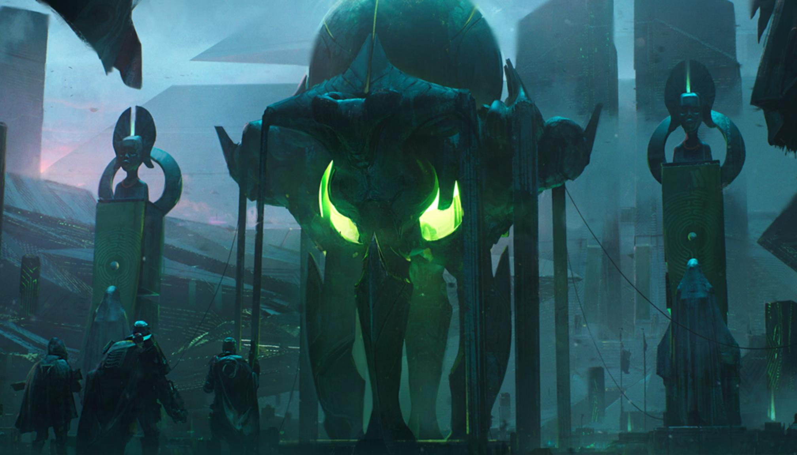

The Darkness
Something hit us. Killed our Golden Age. Nearly wiped us out. Only the Traveler saved us, and at a shattering cost.
The Speaker tells of a cosmic force that swept over us and caused the Collapse. Legend calls it the Darkness, the Traveler's ancient enemy, which hunted it across space.
All we have left are questions. Centuries of debate gave birth to competing arguments on the nature of the Darkness and the Collapse.
The Pujari Position describes the Darkness as a force with both physical and moral presence, an actualization of evil. Pujari art depicts the Darkness as a great storm, or as a change in conduct, a corruption that emerged from within and poisoned the Golden Age.
Saint-14's Position argues that the Darkness was an invading armada, an alien force of incredible - but tangible - power. Some adherents believe that this armada sprang from species rejected or discarded by the Traveler for their sins.
Ulan-Tan's Thesis considers the Darkness a necessary symmetry to the Traveler in a cosmic balance. In this view, the Traveler's goodness led it to sacrifice for others, and it is up to us to return this goodness by healing the Traveler.
The Monist Position, or the Deflationary Position, considers the Darkness as a technologically sophisticated force, perhaps a post-Singularity intelligence. Adherents invoke information theory or contend that the universe is a simulation, allowing advanced intelligence to gain weakly acausal powers by bending the rules.
The Acataleptic Clause claims that we are intrinsically unable to understand the Darkness. In many respects this belief parallels the Praxic Creed, which suggests that we should stop worrying about the nature of the Darkness and focus on resisting and defeating it.
Certain positions - often labeled heretical - imply that the Traveler itself triggered the Collapse, or that it knew the Darkness was coming for it and hoped to use the Solar System as a sacrifice or a proxy army.
their arrival
V113NNI070XMX001 SECRET HADAL INSTANT AI-COM/RSPN: SOLSECCENT//SxISR//DEEPSPACE CONTACT CONTACT CONTACT TRANSIENT. NULLSOURCE. NULLTYPE.
This is a SKYSHOCK ALERT.
Multiple distributed ISR assets report a TRANSIENT NEAR EXTRASOLAR EVENT. Event duration ZERO POINT THREE SECONDS. Event footprint includes sterile neutrino scattering and gravity waves. Omnibus analysis detects deep structure information content (nine sigma) and internal teleonomy.
No hypothesis on event mechanism (FLAG ACAUSAL). Bootstrap simulation suggests event is DIRECTED and INIMICABLE (convergent q-Bayes/Monte Carlo probability approaches 1).
No hypothesis on deep structure encoding (TCC/NP-HARD).
Source blueshift suggests IMMINENT SOLAR ENTRY.
Promote event to SKYSHOCK: OCP: EXTINCTION. Activate VOLUSPA. Activate YUGA. Cauterize public sources to SECURE ISIS and harden for defensive action.
I am invoking CARRHAE WHITE and assuming control of solar defenses.
STOP STOP STOP V113NNI070XMX091